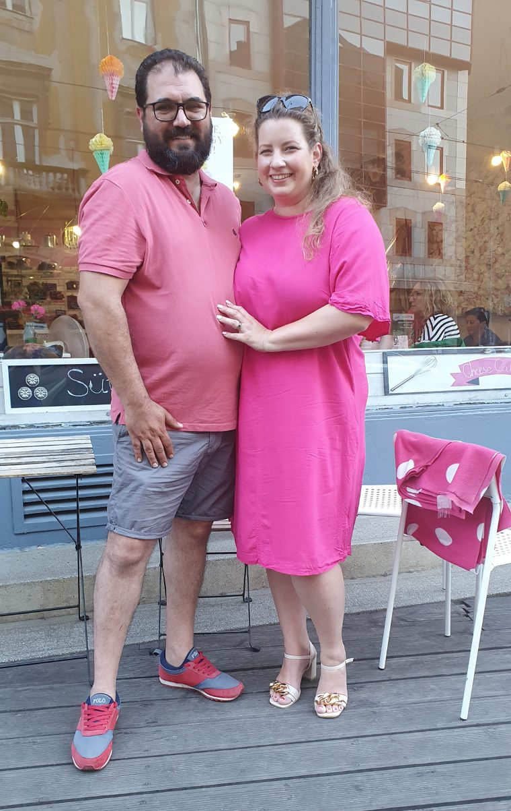
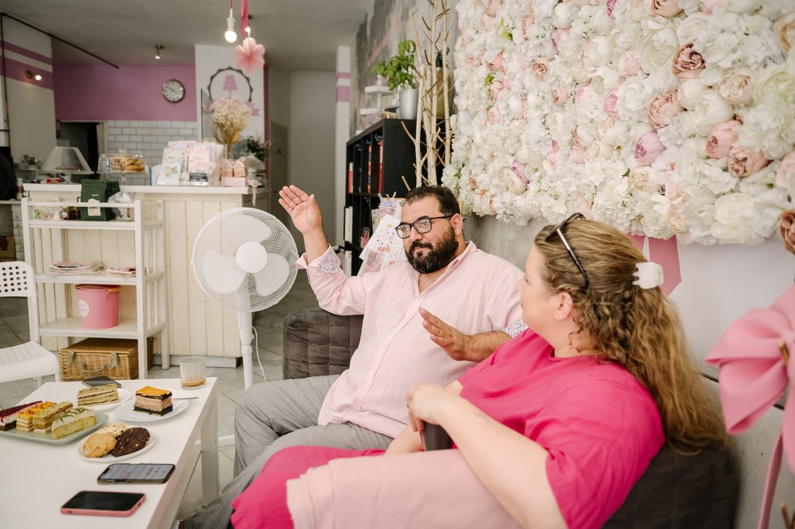
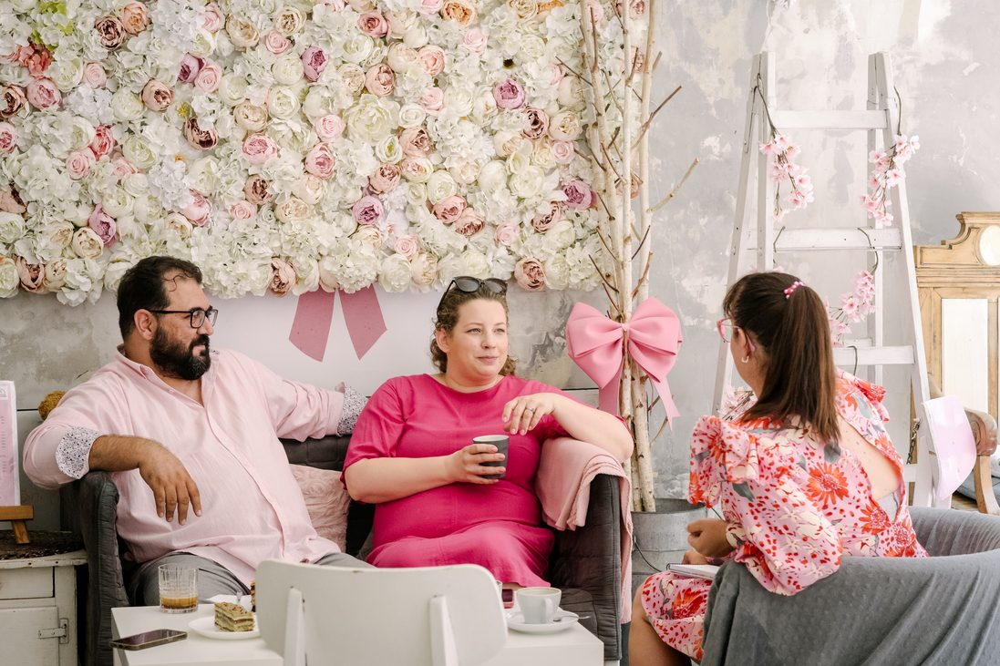

Egy sütis blogból
nőttünk ki
Kapusi Gerti és Menyhért Attila története a táncparkettről a Frankel Leó úti pult mögé.

A kezdetek
Recepteket kértek, egy cukrászda lett belőle
Gerti közgazdász, Ati könyvelő, és mindketten táncot tanítottak, ott is ismerkedtek meg. Gerti azért kezdett sütis blogot írni, mert a barátai folyton receptet kértek tőle. A blog miatt rendszeresen új sütiket kellett kitalálnia, és ezekből a kísérletekből állt össze az a kipróbált receptgyűjtemény, amire később a cukrászda épült.
Két háztartási sütővel és egy ötliteres keverőgéppel indultak, először kávézóknak sütöttek. Az első évek nagyon kemények voltak, de sokat tanultak belőlük. Ma egy tizenkét fős csapattal dolgoznak a Frankel Leó úton.
A cukrászda a sütikre és a burkolt tortákra specializálódott, 2024 nyara óta pedig saját fagyi is készül, több mint egy tucat ízben. Gerti kedvencei továbbra is a nagyis sütik.
Idővonal
Az út idáig
- 2004Ati megalapítja saját tánciskoláját.
- 2013Elindul Gerti blogja, a Sütit akarok!
- Kb. 2015Saját cukrászda a Frankel Leó út 72. alatt.
- 2024Nyáron érkezik a saját, festék nélküli fagyi.
- MaTizenkét fős csapat, gőzgombóc minden nap.
Amiben hiszünk
Három egyszerű szabály
Helyben sütjük
Mindent itt készítünk a pult mögött, saját receptből, kis tételben, hogy frissen kerüljön eléd.
Igazi alapanyag
Igazi vaj, csokoládé és tejszín. A fagyi természetes alapanyagokból, festék nélkül készül.
Mindenkinek jusson
Gluténmentes, laktózmentes és vegán sütik és fagyik, hogy senkinek ne kelljen kimaradnia.



Írtak rólunk